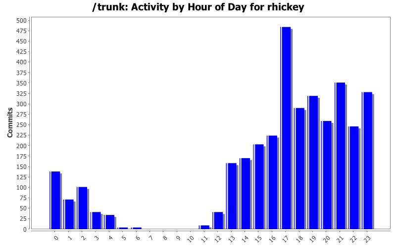
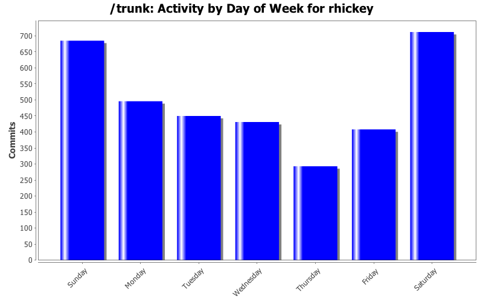
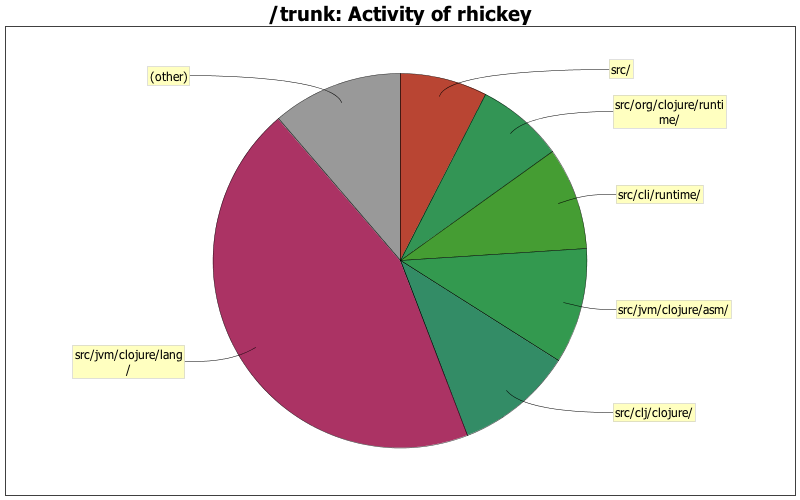

| Directory | Changes | Lines of Code | Lines per Change |
|---|---|---|---|
| Totals | 3475 (100.0%) | 125634 (100.0%) | 36.1 |
| src/jvm/clojure/lang/ | 1736 (50.0%) | 55998 (44.6%) | 32.2 |
| src/clj/clojure/ | 139 (4.0%) | 12735 (10.1%) | 91.6 |
| src/jvm/clojure/asm/ | 21 (0.6%) | 12586 (10.0%) | 599.3 |
| src/cli/runtime/ | 588 (16.9%) | 11121 (8.9%) | 18.9 |
| src/org/clojure/runtime/ | 327 (9.4%) | 9502 (7.6%) | 29.0 |
| src/ | 314 (9.0%) | 9490 (7.6%) | 30.2 |
| src/jvm/clojure/asm/commons/ | 11 (0.3%) | 4917 (3.9%) | 447.0 |
| src/clojure/ | 18 (0.5%) | 3773 (3.0%) | 209.6 |
| src/lisp/ | 58 (1.7%) | 2333 (1.9%) | 40.2 |
| / | 61 (1.8%) | 1962 (1.6%) | 32.1 |
| src/clojure/parallel/ | 3 (0.1%) | 249 (0.2%) | 83.0 |
| src/clojure/zip/ | 2 (0.1%) | 248 (0.2%) | 124.0 |
| src/org/clojure/tools/ | 4 (0.1%) | 237 (0.2%) | 59.2 |
| src/clojure/xml/ | 2 (0.1%) | 117 (0.1%) | 58.5 |
| src/clojure/set/ | 2 (0.1%) | 116 (0.1%) | 58.0 |
| src/clojure/inspector/ | 2 (0.1%) | 110 (0.1%) | 55.0 |
| src/jvm/ | 5 (0.1%) | 87 (0.1%) | 17.4 |
| src/clj/ | 2 (0.1%) | 11 (0.0%) | 5.5 |
| src/clj/clojure/xml/ | 4 (0.1%) | 10 (0.0%) | 2.5 |
| src/clj/clojure/inspector/ | 3 (0.1%) | 10 (0.0%) | 3.3 |
| src/cli/TypeDump/ | 3 (0.1%) | 10 (0.0%) | 3.3 |
| src/clj/clojure/zip/ | 5 (0.1%) | 6 (0.0%) | 1.2 |
| src/clj/clojure/set/ | 3 (0.1%) | 3 (0.0%) | 1.0 |
| src/clj/clojure/parallel/ | 3 (0.1%) | 3 (0.0%) | 1.0 |
| src/jvm/clojure/tools/ | 3 (0.1%) | 0 (0.0%) | 0.0 |
| src/jvm/clojure/runtime/ | 156 (4.5%) | 0 (0.0%) | 0.0 |

EPL in header
41 lines of code changed in 2 files:
refactored Comparator into superclass of functions only
51 lines of code changed in 4 files:
Moved to Eclipse Public License - see epl-v10.html or
http://opensource.org/licenses/eclipse-1.0.php
444 lines of code changed in 95 files:
proxy perf tweaks
Note breaking change if you are using the proxy interface other than the proxy macro itself - proxy maps are now maps of (preferably interned) strings to fns, not symbols to fns, and if you construct a proxy manually you must establish initial map with init-proxy
38 lines of code changed in 4 files:
force instance member interpretation of (.method ClassName), e.g. (.getMethods String) works
7 lines of code changed in 1 file:
removed sharing in registerConstant
0 lines of code changed in 1 file:
fixed tagToClass for chars
1 lines of code changed in 1 file:
check for static field in classname/fieldname
2 lines of code changed in 1 file:
emit string constants directly
45 lines of code changed in 1 file:
release coll on nth of seq, stream work in progress
373 lines of code changed in 8 files:
release coll on nth of seq
45 lines of code changed in 1 file:
added if-not, memoize, and io!
io! blocks will throw exceptions when run in transactions
made await and await-for use io!
46 lines of code changed in 2 files:
releaxed namespace requirement for derives in private hierarchy, patch from J. McConnell
6 lines of code changed in 1 file:
added :exposes-methods to gen-class, patch from Matt Revelle
27 lines of code changed in 1 file:
support :when and :while together in for, patch from Chouser
32 lines of code changed in 1 file:
added unchecked-remainder
14 lines of code changed in 2 files:
added doc string for *agent*
3 lines of code changed in 1 file:
made RT.DEFAULT_COMPARATOR use Util.compare
2 lines of code changed in 2 files:
made APersistenVector.compareTo use Util.compare on elements
1 lines of code changed in 1 file:
swap! returns new value
5 lines of code changed in 1 file:
(1121 more)